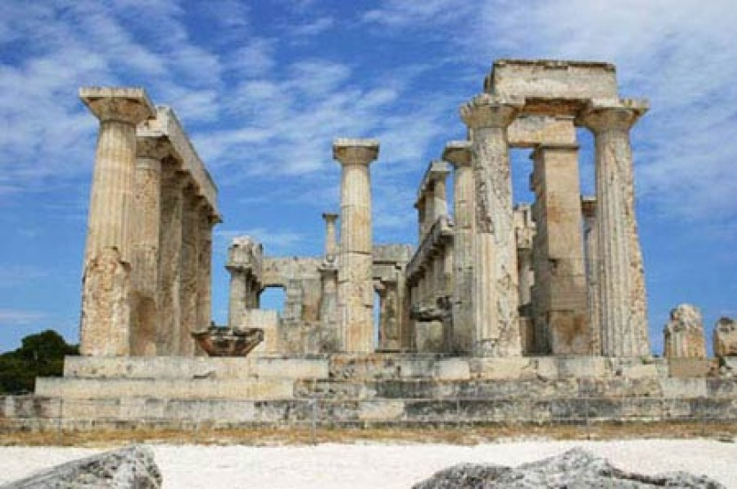

Архаический период Греции (VIII–VI вв. до н.э.): Рождение античного чуда
Архаическая эпоха стала временем грандиозного перелома, когда на обломках "тёмных веков" сформировалась та самая Греция, которая подарила миру философию, демократию и классическое искусство. Это был период взрывного развития, когда за 200 лет греческий мир преодолел путь от полуварварских поселений до создания мощных полисов с оригинальной культурой. В отличие от статичного средневековья или предсказуемого классического периода, архаика поражает своей энергией и парадоксами — здесь одновременно зарождались тирания и демократия, абстрактная математика и культ телесного совершенства, рационализм и дионисийские оргии.
Архаический период в истории Греции, обычно датируемый VIII-VI веками до н.э., является периодом значительных изменений и развития, заложившим основу для последующего классического периода. Этот период характеризуется формированием полисов, развитием экономики, ремесел, торговли, а также появлением новых форм искусства и культуры.
Рождение полиса: социальная революция.
Феномен греческого города-государства сформировался именно в архаический период через три ключевых процесса:
1. Синойкизм — объединение деревень в единый город (например, Афины включили 12 общин Аттики). В Спарте этот процесс принял форму завоевания (мессенские войны).
2. Великая колонизация (750–550 гг. до н.э.) — создание сотен колоний от Черного моря до Испании:
• Причины: нехватка земли, политические конфликты, торговля.
• Ключевые колонии: Сиракузы (Сицилия), Византий (будущий Константинополь), Массилия (Марсель).
• Последствия: греческий язык стал lingua franca Средиземноморья.
3. Социальные реформы:
• Законы Драконта (621 г. до н.э.) — первые письменные законы Афин ("писанные кровью").
• Реформы Солона (594 г. до н.э.) — отмена долгового рабства, разделение на имущественные классы.
• Тирания как переходная форма (Писистрат в Афинах, Поликрат на Самосе).
Культурный взрыв: от алфавита до философии.
Интеллектуальные достижения архаики заложили основы всей античной мысли:
Алфавит: адаптация финикийского письма с добавлением гласных (VIII в. до н.э.) — самый эффективный алфавит древности.
Литература:
• Гомеровские поэмы (записаны ок. 750 г. до н.э.).
• Дидактическая поэзия Гесиода ("Труды и дни").
• Лирика Сапфо, Алкея, Архилоха.
Философия:
• Милетская школа (Фалес: "Всё из воды").
• Пифагор и его числовая мистика.
• Гераклит ("Всё течёт").
Наука: первые карты Анаксимандра, предсказание затмения Фалесом (585 г. до н.э.).
Искусство: от геометрии к гармонии.
Художественные стили архаики отражали поиск идеала:
1. Архитектура:
• Появление ордеров: дорического (Храм Геры в Олимпии) и ионического (Храм Артемиды в Эфесе).
• Каменные храмы вместо деревянных (первые — ок. 600 г. до н.э.).
2. Скульптура:
• Куросы и коры — застывшие фигуры с "архаической улыбкой".
• Эволюция от плоского рельефа к объемным формам (мосхофор, 570 г. до н.э.).
3. Вазопись:
• Чернофигурный стиль (Эксекий: "Ахилл и Аякс").
• Краснофигурная революция (конец VI в. до н.э.).
Религия: от хаоса к системе.
Архаический период упорядочил греческий пантеон:
• Олимпийские игры (776 г. до н.э. — первая запись) — объединяющий фактор.
• Дельфийский оракул — религиозный и политический центр.
• Мистерии: Элевсинские, Дионисийские.
• Культ героев (Геракл, Тесей).
Военное дело: фаланга и "гражданская армия"
2.Гоплитская реформа (VII в. до н.э.):
• Тяжелое вооружение (бронзовый панцирь, щит-гоплон).
• Тактика фаланги — отражала идеал равенства граждан.
1. Флот: триремы коринфского типа (с 550 г. до н.э.).
Парадоксы архаики.
1. Рабство и свобода: одновременно с развитием демократических институтов расцветала работорговля.
2. Индивидуализм и коллективизм: лирическая поэзия воспевала личные чувства, а полис требовал жертвенности.
3. Рационализм и мистика: Пифагор сочетал математику с верой в реинкарнацию.
Наследие.
Архаический период создал:
• Понятие гражданства.
• Идею объективной истины (в науке и философии).
• Эстетические каноны, развитые в классике.
• Экономические модели (монетная система, торговые сети).
Именно в эту эпоху греки осознали себя единой культурой — не через политическое единство, а через общий язык (койне), мифологию и Олимпийские игры. Как писал Архилох: "В полях моих бедствий выросло это дивное чудо — эллинский дух".